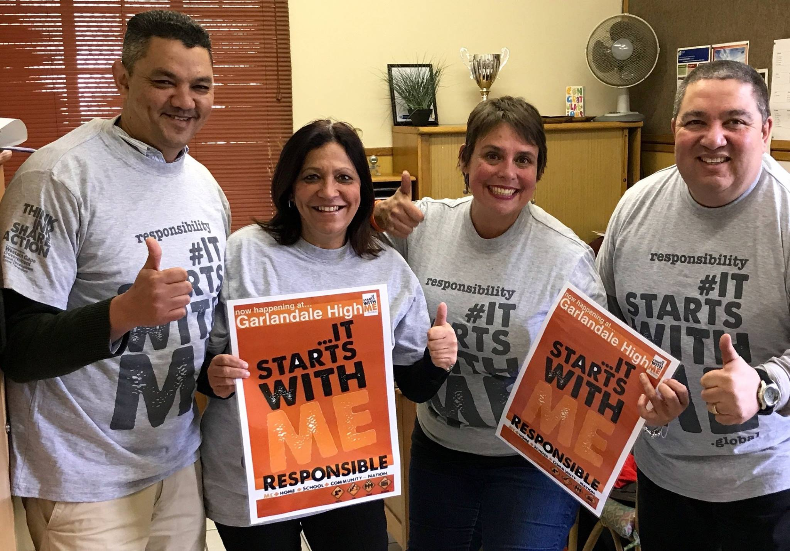

I have been going to this school for 3 years know and I'm almost done with high school it's funny how that I have been going to this school for 3 years know and I still don't know the names of all the teacher's and I still don't know where every class I should go to.

Garlandale is a high school located in Athlone, Cape town. During apartheid it was considered a "coloured school". Today all students are welcome. The school fee is R1200 per year Garlandale High School was formed in 1982 with Mr. Titus as Caretaker Principal. In 1983, the same year as the first matriculants graduated, Mr. AJ Snyders became principal. Initially the school was called Athlone No. 2, but the name was changed to the more unique form that is commonly used today. The present principal is Dawn Crowie. The school housed the first production of Jesus Christ Superstar in 1989, with a band of teachers and learners. TO THE EDUCATION LEADERS IN THE REPUBLIC OF THE WESTERN CAPE I teach at a State school on the Cape Flats. Amidst our anxiety, worry and concern, our staff worked tirelessly to ensure our school readiness to receive our Grade 12 learners. Teachers had to put their hands into their own pockets to buy necessary items for their classrooms. We did this out of concern for the safety of our learners and ourselves. Our Grade 12 learners have returned to school. ALL our teachers have to be on duty ALL day to ensure that ALL the Standard Operating Procedures are adhered to. This is mentally and emotionally draining for teachers and learners. Our Grade 8 to 11 learners have been home since 18 March...WITHOUT access to online and digital teaching/learning.... This post is not to encourage their return, because my personal opinion is that it is almost suicidal to put masses of teachers and learners at the frontline of a life/death situation. My post rather is about the huge sacrifices made by "struggling" schools...because just down the road from our school is an ex-Model C Primary school where the Grade 7 learners attend school only alternate weeks. My question...Do they not have sufficient staff to teach ONLY 1 grade??? UNEQUAL and they get away with it even though the directive is that Grade 7's attend school every day...THEN... Just a little way further an ex-Model C High School has recalled their Grade 8 and 9 learners to return on 22 and 23 June...even though the DBE has stated 03 August as the return date for these grades. This CONCESSION is with the blessing of the Head of Education in the Western Cape.... Where does this leave our Grade 8 and 9 learners? Who gives the WC the authority to continue to do as it pleases? Did our POOR, DISADVANTAGED school miss a memo to give us the right to do as we please?? Stop this inequality...our children are being left behind. Dawn Crowie
There are multiple assamshions about the school's history people say that the school was a grave yard before it became a high school. BUT I know that the school was a open field before it became a high school. There are a lot of thing's that happend before the school became a high school. Some people say that the school was a farm and it is proven that it was when the farm owner himself came to the school to see it. And that's as much as I know about the school's history.
I have made a lot of accomplishments in my schooling year's but I'm only gonna mention my grade 9 achievements well because they are my favourite one's in high school. Alright let's get to it there are a lot of things that I wanted to accomplish at my high school but here are the thing's that I have already accomplish't. I won this fitness challenge which was not easy but I did my best and I came on top. In the fitness challenge I had to win 3 of the 5 round's to win a prize so I won the push ups, sprinting and sit ups out of all the grade 9's last year. And I was proud of my self because it was challenging. Then my second accomplishment was when it was at the end of the second term and I received an award for being one of the smartest kids in my class. Which was even more challenging becuase I was in a class of smart and talented young people and again I was very proud of myself. So I must thank them for helping me by giving me encouragement to work hard. Know I'm in grade 10 and almost done with high school and there is just one accomplishment I want and the accomplishment I want is to come up in the top 10 of the smartest people of the school at the end of the year in the final term's report.